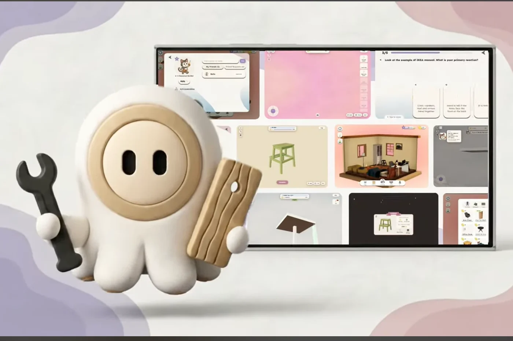
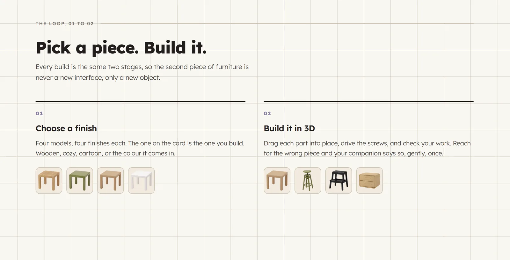

MODU
Furniture assembly, made calmer. A gamified 3D furniture assembly app for Android, designed for cognitive accessibility.

The problem
Flat-pack instructions ask people to hold a lot in their heads at once: tiny drawings, many parts and no feedback until something goes wrong. For people who are easily overwhelmed, distracted or anxious, that turns a simple build into a stressful one.
The idea
MODU turns the instruction booklet into a 3D build you can hold in your hands: one step and one part at a time, with a companion who tells you what comes next.
Research
The app grew out of my MSc research on reducing cognitive load in web-based 3D learning tools, which included a user survey on gamified tutorial interfaces. [Owner: add two or three key findings from the research.]
Four ways to be guided
Two people can build the same thing in MODU and have completely different experiences. Accessibility is the core of the app, not a settings option.
- Control: [owner: one line]
- Visual: [owner: one line]
- Momentum: [owner: one line]
- Clear Path: [owner: one line]
An onboarding questionnaire recommends a mode, and players can switch at any time. There is also a mirrored layout for left-handed players.
Helping people who get stuck
A recorded companion voice, spoken steps, and gentle prompts when someone has been idle or keeps missing the same part, pointing them to the right control.
Design system
A shared design-token theme and reusable UI components keep onboarding, assembly, the catalogue and the room screens consistent. The product website reuses the same tokens, so app and site share one visual language.

Testing with real people
We showed MODU to the public over two days at the IDM Showcase at Trinity College Dublin in August 2026, and watched people build with it. [Owner: add what you learned or changed afterwards, and any visitor numbers.]
My role
I was project manager, coordinating six designers and developers, and full-stack developer, building the app's interface and features in React Native and TypeScript on Supabase. I also designed and built the product website.
What’s next
[Owner: for example a Google Play release, or more furniture models.]